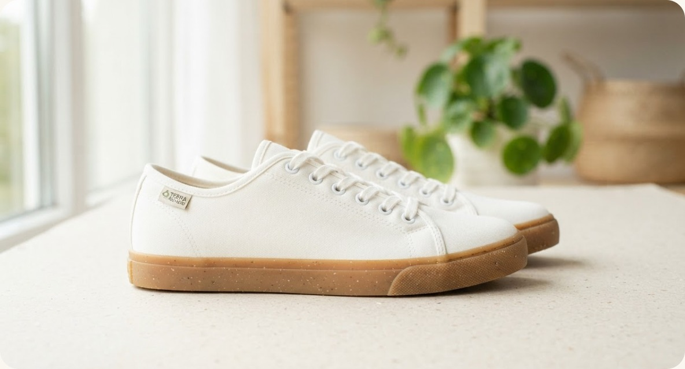
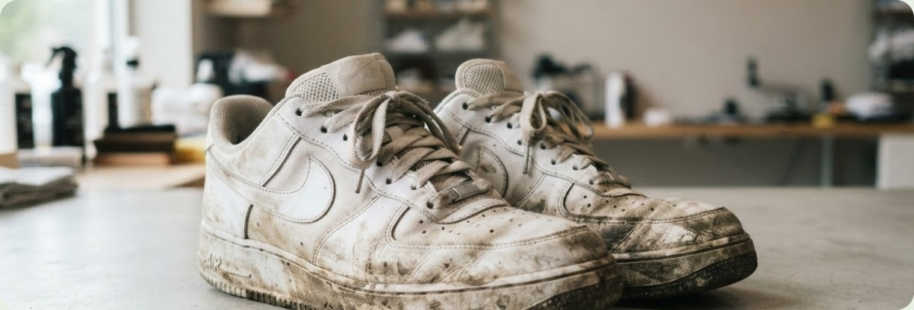
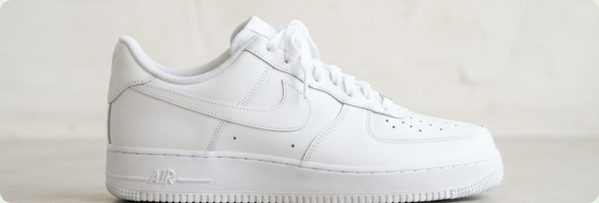
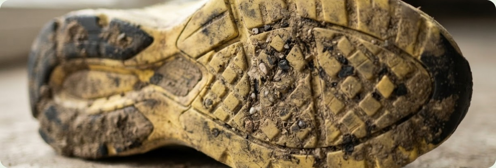
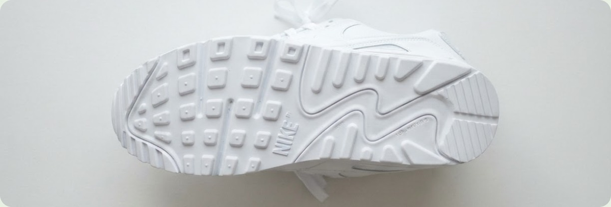

Deep Cleaning Tanpa Merusak
Perawatan menyeluruh dengan teknik yang disesuaikan dengan bahan sepatu.
Layanan cuci sepatu profesional di Depok dengan sabun ramah lingkungan.
Cepat, bersih, wangi.

Perawatan menyeluruh dengan teknik yang disesuaikan dengan bahan sepatu.
Membersihkan kotoran dengan sabun ramah lingkungan yang lembut pada sepatu.
Tidak perlu keluar rumah. Hubungi kami untuk cek jangkauan antar-jemput.
Rp 35.000
Pembersihan bagian luar dan sol untuk menyegarkan sepatu sehari-hari.
Pilih PaketRp 50.000
Pembersihan menyeluruh pada bagian luar, dalam, tali, dan sol sepatu.
Pilih PaketRp 65.000
Perawatan khusus untuk membantu mengurangi noda kuning pada sol sepatu.
Pilih Paket



Contoh statistik untuk tata letak, bukan data atau klaim usaha yang terverifikasi.